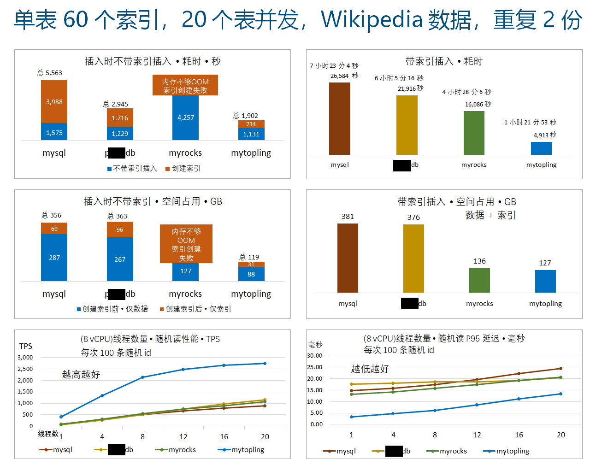
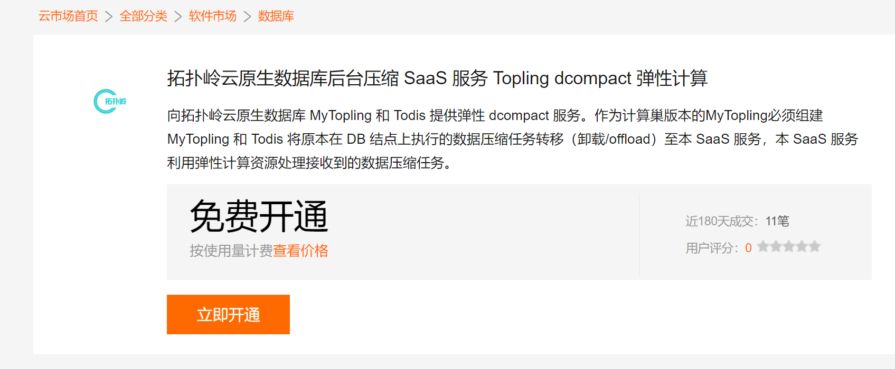
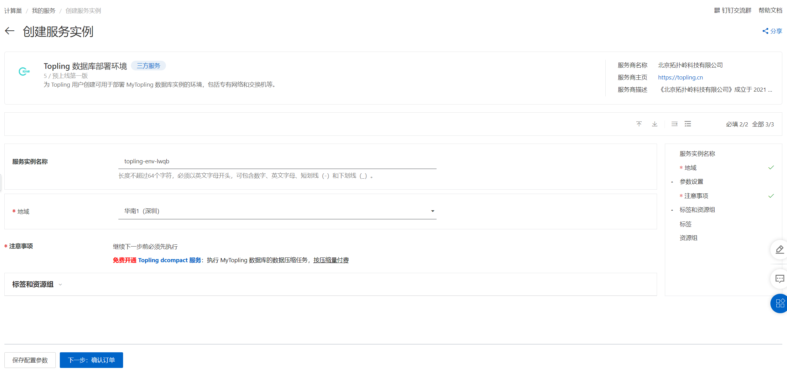
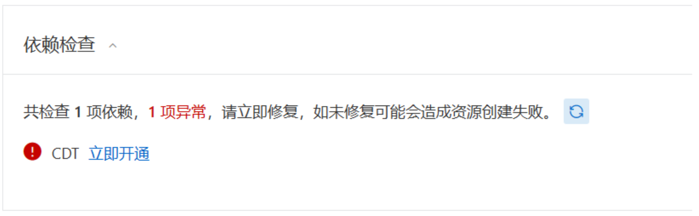
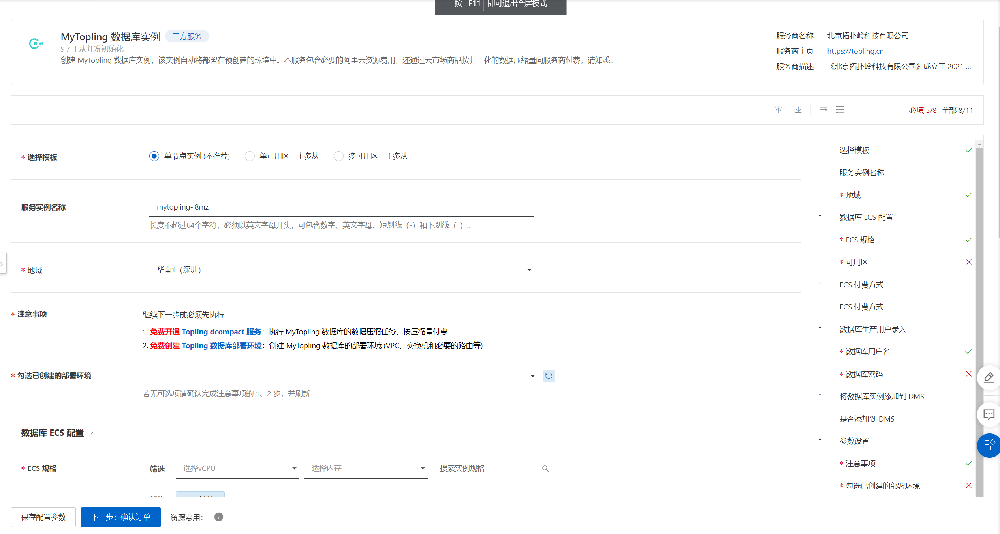
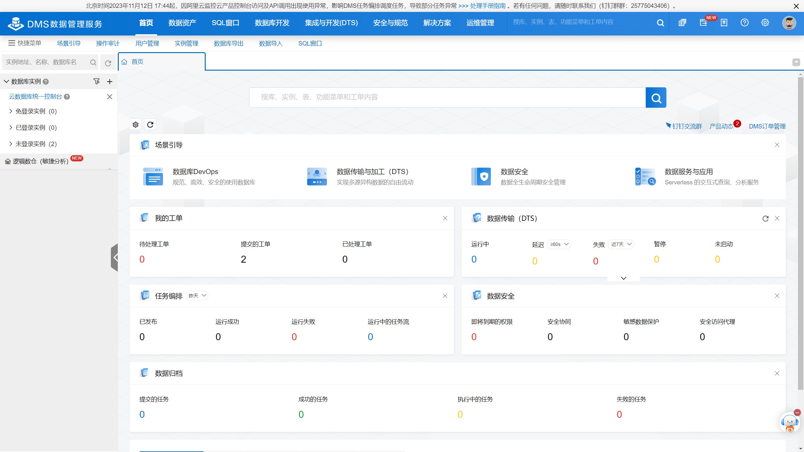
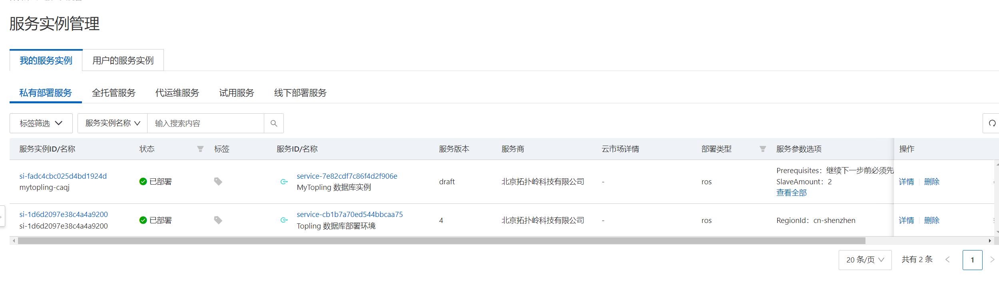
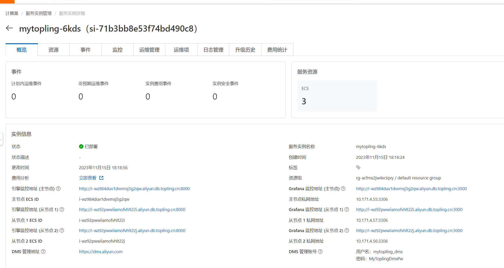
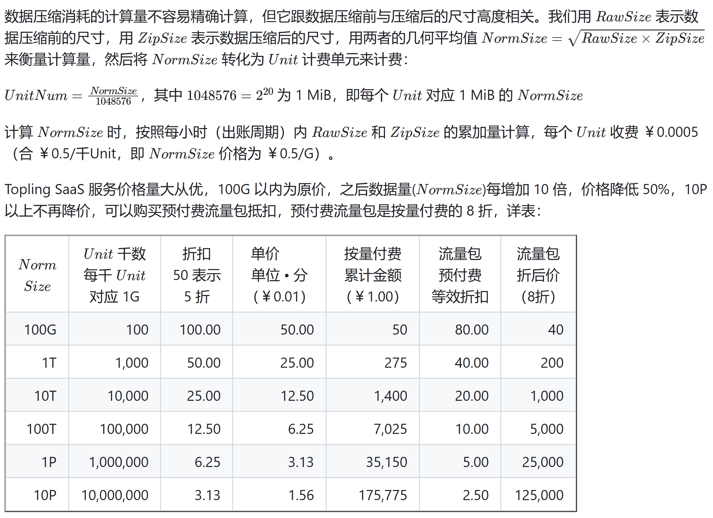

服务使用说明
产品说明
ToplingDB SaaS 系列数据库(如 MyTopling)由以下三部分组成: * Topling SaaS 弹性计算服务 执行代理运算。在数据库运行的过程中，Topling SaaS 弹性计算服务会按照使用运算量收取费用。
-
Topling 数据库运行环境 为后续创建 MyTopling 等数据库创建运行环境。包含VPC、vSwitch以及连接到 Topling SaaS 弹性计算服务的对等连接。ToplingDB 系列数据库必须部署在对应地域(Region)的运行环境下。
-
MyTopling 数据库 用户实际使用的数据库。除了数据库本身使用的ECS资源会由阿里云代扣之外，我方会收取数据库调用
Topling SaaS 弹性计算服务的费用（数据库自动调用，无需用户干涉），按照服务消耗的计算量收费。
弹性计算服务收费相关详见后文按量付费说明
MyTopling 数据库的优势
ECS 8c32g 本地 SSD(ecs.i3g.2xlarge) 
MyTopling 数据库实例创建流程
1.创建数据库依赖项
1.1 开通 Topling SaaS 弹性计算服务(点击跳转)
 本服务是后续资源创建的基础，如果未开通，则无法继续。（本服务为 Topling 的所有数据库提供服务，MyTopling 是其中之一）
1.2 创建 Topling 数据库部署环境(点击跳转)

为数据库实例准备 VPC，每个地域必须创建一次且仅能创建一次。（本运行环境为 Topling 的所有数据库提供支撑，MyTopling 是其中之一）
注意：如果您未开通 Topling SaaS 弹性计算服务 则 Topling 数据库运行环境 会创建失败。请删除后重建
注意：如果您尚未开通 CDT，会出现以下提示信息，按照提示开通 CDT，然后继续下一步。

2. 创建 MyTopling 数据库实例(点击跳转)
MyTopling 实例为用户实际使用的数据库。如下图，用户按自身需求填写选项内容，填写完成后即可创建数据库。

注意：
临时测试(不可用于生产系统)使用抢占式 ECS 实例，价格低廉，但有可能会被云厂商回收，导致数据消失，因此仅供临时测试使用，绝不可用于生产系统。此种实例产生的按量付费的 SaaS 费用不变，与其它类型的相同。
用户可以使用阿里云DMS 管理创建的数据库（如图），DMS 连接数据库的初始用户名为 mytopling_dms，密码为MyToplingDmsPw。

注意：DMS 用户 (mytopling_dms) 仅供 DMS 服务连接，在不修改数据库白名单的前提下，除阿里云官方服务外，其他客户端无法使用此用户名连接数据库。
3. 管理与连接数据库
查看数据库实例
创建 MyTopling 后，可前往计算巣控制台查看创建的实例。如图 
点击 MyTopling 数据库实例查看创建的数据库，如图:

说明：
- 使用私网地址连接数据库,如图中的 10.171.4.55, 公网地址默认无法连接
- 通过相关超链接可以访问实例的引擎监控和 grafana 监控
MyTopling 默认创建的安全组没有放行 3306 端口，但同安全组内可以访问任意端口。
因此，用户可以在 MyTopling 相同安全组内创建实例以连接数据库，或自行放行 10.0.0.0/8 等网段的 3306 端口。
注意，切勿放行 MyTopling 3306 端口到 0.0.0.0/0 。
如果现有的其他 VPC 需要连接 MyTopling 数据库，可以使用云企业网 或 对等连接 打通网段.
操作方法参见阿里云的相关文档。
按量付费说明

- 每超出前一个价格区间，就开始按下一个价格区间计价，例如，100G 以内为 ￥0.5/G，100G \~ 1T 区间的 900G 价格为 ￥0.25/G。
- 用预付费流量包抵扣时，从一开始就按流量包的价格计算，例如购买了 100T 的流量包，从一开始就按 ￥0.05/G 的价格计算。
注: 阿里云后付费目前尚未推出流量包功能，可联系客服享受相同折扣
以 ToplingDB 的写放大估计，NormSize 一般为写入数据量的 5~10 倍，不同的数据 Pattern，写放大会有所不同，以实际为准。 举例来说: 同时运行 sysbench 和 tpcc，对数据库发出约 6 MiB/s 持续的随机写，每小时产生的 NormSize 约为 170 G，以原价计为 ￥85（貌似挺贵）。 保持 6 MiB/s 的速度持续运行一年，产生 1489T 的 NormSize，使用按量付费价格为 ￥42,790，使用 10P 的预付费流量包，价格为￥18,613。 对于普通应用，写压力远低于此，实际支出是非常低的。同时 MyTopling 带来的 3 倍以上 CPU、内存、SSD 节约，更加实实在在地降低了成本。
实际上，一方面现实应用很少有这么高的写压力，另一方面 MyTopling 能承载的极限压力远高于此！此外，MyTopling 也有完全的私有化部署版本，SaaS 也运行在用户的 ECS 上，按传统方式收费，进一步为高负载应用降低成本。
常见问题
- 实例创建失败
- 弹性计算服务被关闭
- 如果您开通
Topling SaaS 弹性计算服务后关闭了服务，将无法继续创建 ToplingDB 相关实例
- 如果您开通
- 未开通 DMS 服务
- 如果实例创建完成，但此用户尚未使用过阿里云的 DMS 服务，则可能会导致创建失败。然而此时实例数据库已创建成功，不影响 DMS 管理数据库之外的功能。
- 注意，此时虽然计算巢资源栈创建失败，但 ECS 实例已经创建完成，因此阿里云会收取实例费用。
- 忘记用户名密码
- 可以前往 DMS 控制台，使用用户名
mytopling_dms密码MyToplingDmsPw连接数据库重置。 - 注意，不要修改自动创建的用户，如
sync，mytopling_dms等用户。 - 资源栈删除失败
- 数据库资源栈删除失败 查看对应安全组(名字以 ros_VpcSecurityGroup_stack 开头)下是否存在其他ECS等资源，如果存在，移出此安全组后重新删除资源栈
- Topling 数据库运行环境删除失败 查看 VPC 下是否有未释放的实例以及未删除的 ECS、NAS 挂载点等资源